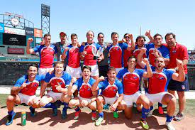

Selección chilena
La selección de rugby de Chile, conocida como Los Cóndores, es el equipo de rugby que representa a Chile en los campeonatos oficiales organizados por la World Rugby así como en otras competencias internacionales.
Participa anualmente en el Sudamericano de Rugby A. Pese a haber realizado buenas campañas en juveniles, nunca ha logrado participar de la fase final de una copa del mundo a nivel adulto.
Históricamente es considerada como la 3.ª mejor selección sudamericana después de la argentina y uruguaya, 5.ª a nivel americano , y se ubica actualmente en el 23.º puesto del ranking mundial de la World Rugby Ranking.

Pequeña Reseña
El rugby en Chile se inició en el siglo XIX. Los primeros en practicarlo fueron tripulantes de un carguero inglés que llegaron al puerto de Iquique en 1894, y que se enfrentaron a un equipo formado por empleados de compañías salitreras. Posteriormente la práctica se extendió a Valparaíso y Santiago donde se formaron los primeros clubes que conformaron la Unión de Rugby de Chile.
El 4 de mayo de 1953, se funda la Federación de Rugby de Chile, oficializándose sus estatutos y reglamentos el 16 de diciembre de 1963. Percibe la personalidad jurídica el 4 de agosto de 1964 bajo el decreto Nº 2244. Dicha federación se encuentra afiliada al Comité Olímpico de Chile, mientras que en el ámbito internacional está afiliada a la Confederación Sudamericana de Rugby, a la Federación Internacional de Rugby Amateur (F.I.R.A.) y a la International Rugby Board (I.R.B.), desde el 5 de noviembre de 1991.
Más información aquí